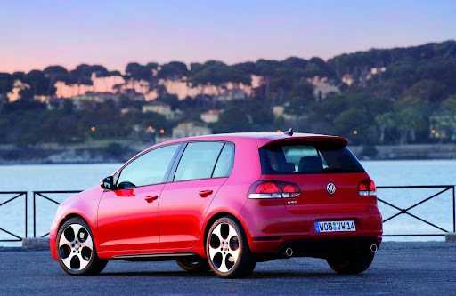

Golf 6 gti
La Volkswagen Golf VI est une berline compacte produite par le constructeur automobile allemand Volkswagen de 2008 à 2014. Il s'agit de la sixième génération de la Volkswagen Golf
Son moteur était une version mise à jour du moteur Mk5 GTI (également utilisé dans la Mk6 Golf R), avec 232 ch (contre 266 pour la R). L'accélération de 0 à 100 km/h est en 6,6 secondes
Pour cette sixième génération de Golf GTI, Volkswagen a donné la priorité au caractère "familial" de la compacte, tout en lui offrant une robe pleine d'hommages à son illustre ancêtre.
De quoi satisfaire les pères de famille qui voudraient acheter une sportive sans avoir de problème de conscience. Un peu moins les pilotes...
Lors de notre Essai, Volkswagen nous a présenté simultanément la Golf GTI et sa version Diesel, la GTD.
Si l'idée en soi n'est pas mauvaise, il est dommage de constater la similitude trop importante entre les deux modèles.
